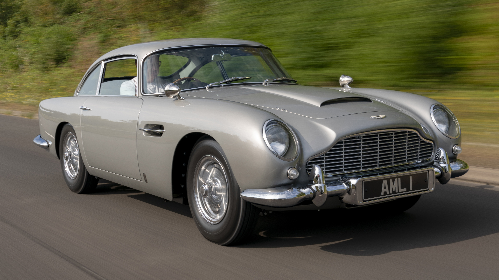
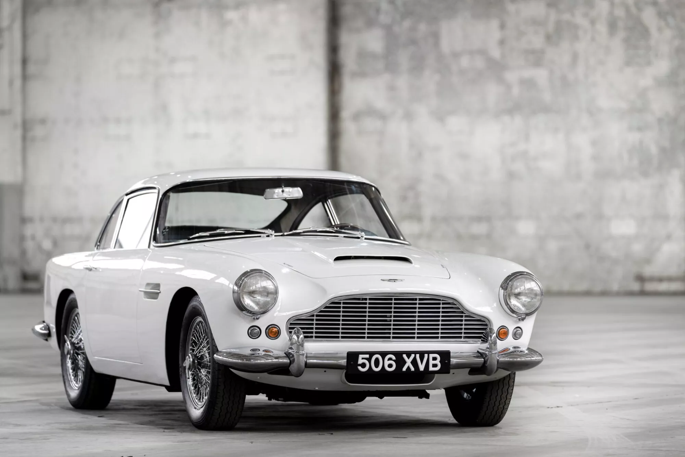
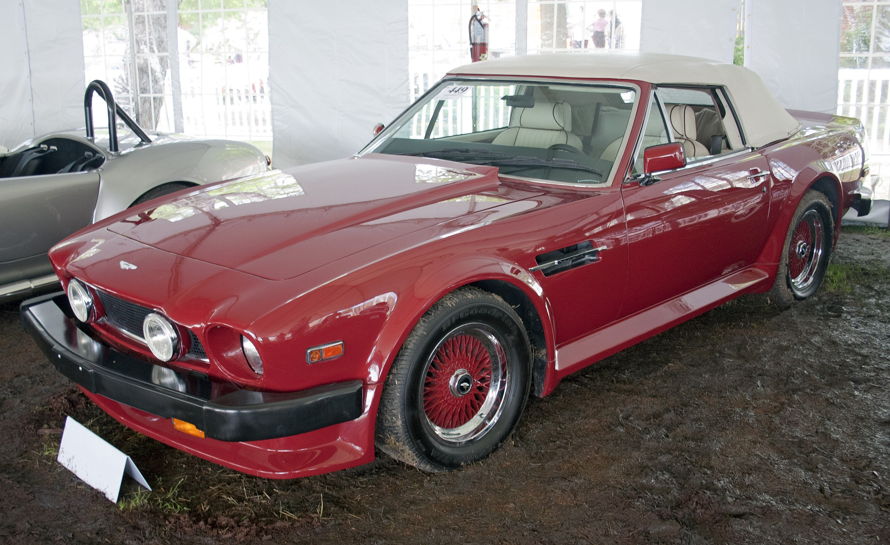
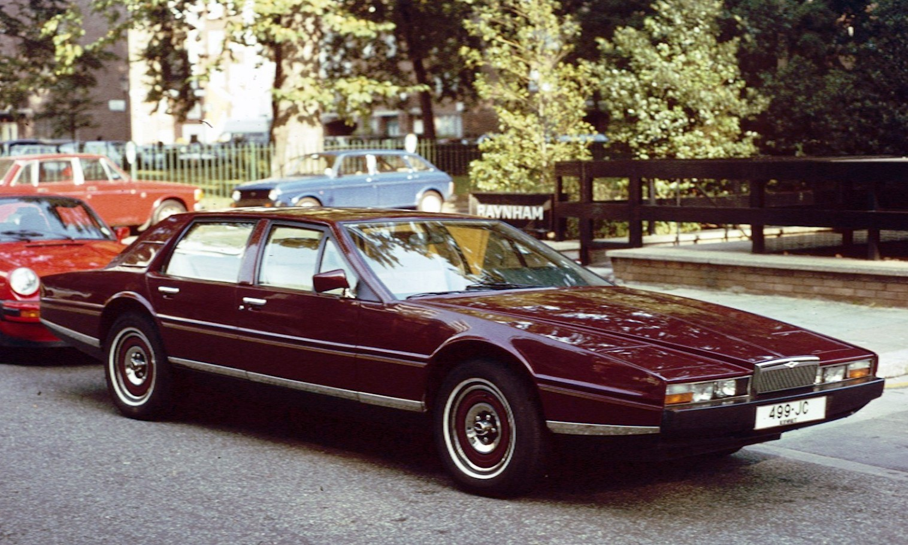
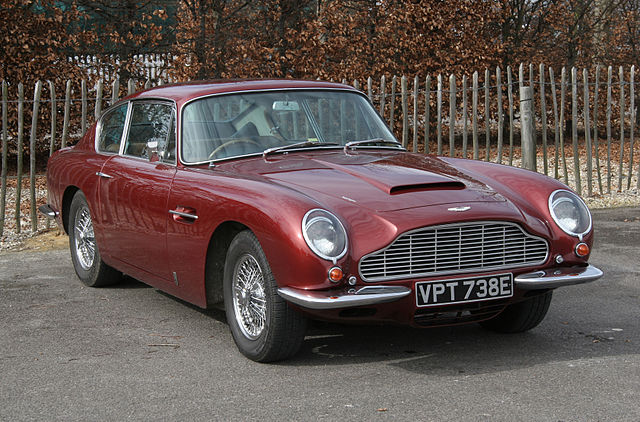

Modell: Aston Martin DB5
Baujahr: 1963-1965
Produktionsstückzahl: 1.059
Motor: 4.0L I6
Leistung: 282 PS
Höchstgeschwindigkeit: 233 km/h

Modell: Aston Martin DB4
Baujahr: 1958-1963
Produktionsstückzahl: 1.200+
Motor: 4.0L I6
Leistung: 240 PS
Höchstgeschwindigkeit: 240 km/h

Modell: Aston Martin V8 Vantage
Baujahr: 1977-1989
Produktionsstückzahl: 1.000+
Motor: 4.2L V8
Leistung: 275 PS
Höchstgeschwindigkeit: 250 km/h

Modell: Aston Martin Lagonda
Baujahr: 1976-1990
Produktionsstückzahl: 645
Motor: 5.3L V8
Leistung: 280 PS
Höchstgeschwindigkeit: 240 km/h

Modell: Aston Martin DB6
Baujahr: 1965-1971
Produktionsstückzahl: 1.800+
Motor: 4.0L I6
Leistung: 282 PS
Höchstgeschwindigkeit: 240 km/h